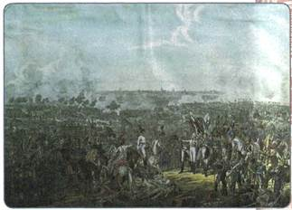
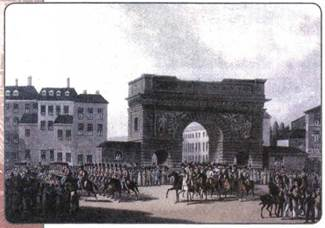
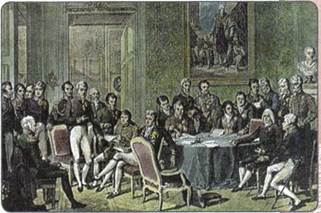
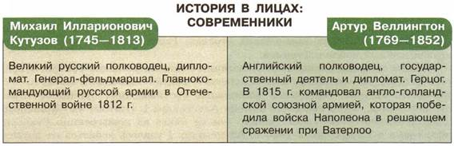

Как изменилось внешнеполитическое положение России после победы над Наполеоном?
1. Начало Заграничных походов
Изгнав врага из России, император Александр I, уже не первый год противостоявший Наполеону, понимал, что противник в короткий срок мог собрать новую армию и вновь перейти в наступление. Поэтому русской армии был дан приказ пересечь границу и начать преследование неприятеля. Началась война за освобождение Европы от власти Наполеона.
В январе 1813 г. русская армия под командованием М. И. Кутузова переправилась через Неман и вскоре освободила от французов польские земли. 28 января 1813 г. была занята Варшава.
Империя Наполеона стала рушиться: его недавние союзники отвернулись от него. Вскоре сложилась шестая антифранцузская коалиция. Россию поддержали Англия, Пруссия, Австрия, Швеция.
4 марта 1813 г. отряды генералов А. И. Чернышёва и Н. Г. Репнина с разных сторон внезапно ворвались в Берлин. Через 10 дней в освобождённый от французов город вошли войска П. X. Витгенштейна. Немецкое население встречало русские войска как своих освободителей.
Для того чтобы перенести боевые действия на территорию самой Франции, по приказу Кутузова главные силы русской армии стали сосредоточиваться за рекой Эльбой в районе Лейпцига.
2. Смерть М. И. Кутузова
Однако в разгар этих приготовлений, в апреле 1813 г., тяжело заболел М. И. Кутузов. Вскоре в городке Бунцлау (ныне г. Болеславец в Польше) фельдмаршал скончался. Его тело забальзамировали и отправили в Петербург. По пути следования тысячи людей выходили проститься с великим полководцем, выражая ему свою любовь и благодарность. От Нарвы до Петербурга около 200 км гроб с его телом народ нёс на плечах. 25 июня 1813 г. М. И. Кутузов с высшими почестями был похоронен в недавно возведённом Казанском соборе. Через несколько лет около собора был воздвигнут величественный памятник в его честь.
3. Завершение разгрома Наполеона

Битва под Лейпцигом
Смерть Кутузова не только стала большой утратой для русской армии, но и отразилась на ходе военных действий. Наполеон сумел собрать новую армию, превосходившую численностью объединённые русско-прусские силы. Эта армия смогла одержать победу над союзниками в битве под Дрезденом в августе 1813 г.
4—7 октября 1813 г. под Лейпцигом произошло грандиозное по масштабам сражение — Битва народов.
В ходе его объединённые русско-прусско-австрийские войска численностью 300 тыс. человек нанесли поражение 190-тысячной армии Наполеона.
После этого поражения Франция вела борьбу уже только на собственной территории. 18 марта 1814 г. союзные войска вступили в Париж. Во главе российской армии на белом коне красовался император Александр I, в одночасье ставший не просто победителем Наполеона, но и «царём царей». Он вынудил Наполеона подписать отречение от престола и отправиться в ссылку на остров Эльба близ берегов Италии. Во Франции было восстановлено правление династии Бурбонов, на престол взошёл Людовик XVIII. Однако власть короля по настоянию Александра I была ограничена конституцией.
4. Венский конгресс
Для решения вопросов послевоенного устройства Европы в сентябре 1814 г. в Вене был созван конгресс (совещание для ведения переговоров). Заседания конгресса проходили в 1814—1815 гг.: главы европейских государств обсуждали, каким будет послевоенное устройство Европы. Решающий голос здесь имели делегации России, Великобритании и Австрийской империи.
Было решено восстановить европейские границы, которые существовали до начала завоевательных походов французских армий (до 1792 г.). Однако это положение было принято с серьёзными оговорками, так как требовалось вознаградить наиболее активных участников борьбы с Наполеоном. Австрия и Пруссия вернули почти все свои утраченные прежде земли и получили новые. Англия добилась передачи ей острова Мальта и Ионических островов.
Александр I выступил с предложением объединить польские земли под своей властью. Несмотря на неудовольствие Пруссии, за счёт территории которой это произошло, такое решение было выполнено. Александр не столько стремился к расширению территории государства, сколько желал создать в составе России Царство Польское, управляемое согласно либеральной конституции. Это подняло бы авторитет российского монарха в Европе и в то же время не вызвало бы, по его мнению, сильного недовольства польских дворян, мечтавших о независимом государстве.
Известие о бегстве Наполеона с острова Эльба и восстановление его империи во Франции весной 1815 г. вынудило конгресс быстрее разрешить все спорные вопросы. Против Наполеона сложилась новая, седьмая коалиция. Объединёнными силами Англии, Пруссии и Нидерландов Наполеон был разгромлен в битве при Ватерлоо в июне 1815 г., объявлен пленником всех стран-союзниц и сослан на остров Святой Елены в южной части Атлантического океана.
5. Священный союз
На Венском конгрессе Александр I выступил с предложением создать Священный союз в интересах обеспечения мира в Европе и спокойствия внутри государств. В сентябре 1815 г. такой союз был создан, в него вошли Россия, Пруссия и Австрия. Вскоре к Священному союзу присоединились правительства всех европейских государств, за исключением Англии, Османской империи и Папского государства. Они приняли решение время от времени проводить новые общие встречи для обеспечения нерушимости послевоенного порядка.
Император Александр I не просто присутствовал на всех конгрессах Священного союза, но и выступал его фактическим руководителем. В условиях роста революционных настроений в Европе на конгрессе в городе

Вступление русских войск в Париж 31 марта 1814 г.

Венский конгресс. Художник Ж.-Б. Изабе
Троппау в 1820 г. его участники закрепили за собой право военного вторжения в ту страну, где произойдёт революция, вне зависимости от мнения правительства самой этой страны. Такое право вскоре использовала Австрия для подавления народных движений в Италии, Франция для подавления революции в Испании.
Россия также готовилась «оказать помощь» Австрии, но та поспешила разобраться в своих делах собственными силами.
Однако уже к началу 1820-х гг. всё чаще стали давать о себе знать противоречия между странами — участницами союза. Камнем преткновения, приведшим к развалу Священного союза, стал Восточный вопрос.
6. Восточный вопрос
Восточный вопрос был вызван ослаблением и наметившимся распадом Османской империи (Турции) и борьбой европейских держав за раздел её владений. Ещё Екатерина II в своё время стремилась к созданию на Балканском полуострове, которым владела Турция, православной Греческой империи. Даже своего второго внука она назвала Константином в честь основателя Константинополя и намеревалась поставить его во главе этого планируемого государства.
Перечислите основные моменты отношений России с Османской империей в периоды правления Екатерины II и Павла I.
После победы над Наполеоном Александр I вновь вернулся к идее создания на Балканах греческого государства под покровительством России. В 1821 г. вспыхнуло восстание в греческих областях Османской империи, а в 1822 г. Греция была провозглашена независимой республикой. Пытаясь подавить восстание, турки жесточайшим образом расправлялись с его участниками. Министр иностранных дел России граф И. Каподистрия (грек по национальности) оказывал всяческую поддержку восставшим. В самой Греции существовала влиятельная политическая группа, настроенная на тесный союз с Россией.
В разгар восстания Россия предъявила Турции требование прекратить преследования греков и признать независимость Греции. Зверствами турок были возмущены и в других европейских странах. Россия начала усиленно готовиться к новой войне с Турцией.
Однако согласно документам о создании Священного союза греческое восстание было не чем иным, как революцией против «законного монарха» — турецкого султана. Поддержка восставших противоречила принципам Священного союза, этого любимого детища Александра I. Поэтому ему пришлось даже публично осудить восставших. Тем не менее на конференции Священного союза в Петербурге в 1825 г. Александру I удалось добиться от других участников Союза принятия обращения к Турции с предложением «устроить балканские дела». Однако ни Англия, ни Австрия не желали укрепления позиций России на Балканах. Восточный вопрос, таким образом, так и не был решён, а Священный союз показал свою непрочность.
7. Россия и Америка
Северо-западные земли американского континента были открыты русскими землепроходцами ещё в начале XVIII в. Тогда же там появились первые русские поселения и эти земли были включены в состав России. Указом Павла I в 1799 г. была создана Русско-Американская компания с правом пользования промыслами и полезными ископаемыми на Аляске (в Русской Америке).
В царствование Александра I Россия добилась значительных успехов в освоении своих американских владений. Император направил для исследования северной части Тихого океана экспедицию И. Ф. Крузенштерна. На небольших кораблях (шлюпах) «Надежда» и «Нева» И. Ф. Крузенштерн и Ю. Ф. Лисянский совершили первое русское кругосветное путешествие. В 1804 г. Новоархангельск (с 1867 г. — Ситка) был объявлен центром русских владений на Аляске. В 1808 г. Россия установила дипломатические отношения с Соединёнными Штатами Америки, территория которых тогда охватывала лишь восточные районы современных США. В 1812 г. русскими переселенцами был основан форт (крепость) Росс — самая южная точка русских владений в Америке (в районе современного Сан-Франциско). 4 сентября 1821 г. Александр I подписал манифест об исключительных правах России на Аляску севернее 51-й параллели. Берингово море было объявлено внутренним морем России.
Интересы России в Северной Америке постепенно входили в противоречие с интересами растущих и набирающих силу США. Недовольство активностью русских в Америке проявляла и Англия. Кроме того, освоение и содержание таких далёких территорий требовало колоссальных средств, которых у России не было. Поэтому Александр I пошёл на заключение в 1824 г. договора с США. По нему была восстановлена свобода мореплавания и рыбной ловли в Беринговом море, а русские владения были ограничены 54-й параллелью.
В 1825 г. была подписана русско-английская конвенция (договор) по Аляске, которая разрешала, в частности, свободное плавание английских судов в Беринговом море. Всё это свидетельствовало о начале постепенного ухода России из Северной Америки.

ПОДВЕДЁМ ИТОГИ
Отечественная война 1812 г. и Заграничные походы русской армии 1813— 1814 гг., закончившиеся полным разгромом крупнейшей и самой сильной европейской и мировой державы начала XIX в. — наполеоновской Франции, привели к тому, что Россия на несколько десятилетий стала ведущей мировой державой, оказывавшей определяющее воздействие не только на европейскую, но и на мировую политику.
Победа России в Отечественной войне и разгром Наполеона имели большое значение и для стран Европы, где были продолжены процессы экономической модернизации.
Вопросы и задания для работы с текстом параграфа
1. Назовите основные цели Заграничных походов русской армии. Что стало главной причиной продолжения Россией военных действий против Франции?
2. Сформулируйте общую оценку итогов Венского конгресса (для России; для прочих стран). 3. Каковы были причины образования Священного союза? Когда и с какими целями он был создан? 4. Какова была роль России в Священном союзе? 5. Что собой представлял Восточный вопрос? Какую роль он играл во внешней политике Российской империи?
Работаем с картой
Проследите по карте важнейшие события, связанные с Заграничными походами русской армии 1813—1814 гг.
Изучаем документ
ИЗ ЖУРНАЛА ВОЕННЫХ ДЕЙСТВИИ РОССИЙСКИХ ВОЙСК ЗА МАРТ 1813 г.
Генерал граф Витгенштейн рапортует, что 27 февраля прибыл он с вверенными ему войсками в Берлин к неописуемой радости жителей сей столицы.
Его королевское высочество [прусский] принц Гейнрих со многими генералами и большою свитою выехал навстречу войскам за четыре версты от города, и всё сие пространство было покрыто множеством народа, который также наполнял все улицы города, крыши домов, заборы и окна. Во всё время сие из всех уст раздавалось радостное восклицание: «Да здравствует Александр, наш избавитель!» Вечером весь город был иллюминирован. <...>
При вступлении графа Воронцова во Франкфурт был он встречен магистратом и народом с непритворною радостью. <...>
Повсюду в Саксонии при появлении российских войск встречают их с неописанной радостью, повсюду раздаются крики: «Да здравствует Благотворный Александр, наш избавитель!»
Чем вы можете объяснить восторженную встречу русской армии в немецких го родах?
1. Используя дополнительную литературу, составьте биографическое сообщение о М. И. Кутузове. 2. Подготовьте электронную презентацию о Казанском соборе Петербурга. Особо выделите места, связанные с именем М. И. Кутузова. 3. Используя дополнительную информацию, узнайте, как происходило сражение под Лейпцигом, напишите (в тетради) рассказ на тему «Битва народов» — решающее сражение Наполеоновских войн». 4. Используя Интернет, выясните, из каких исторических источников можно узнать о Заграничных походах русской армии.